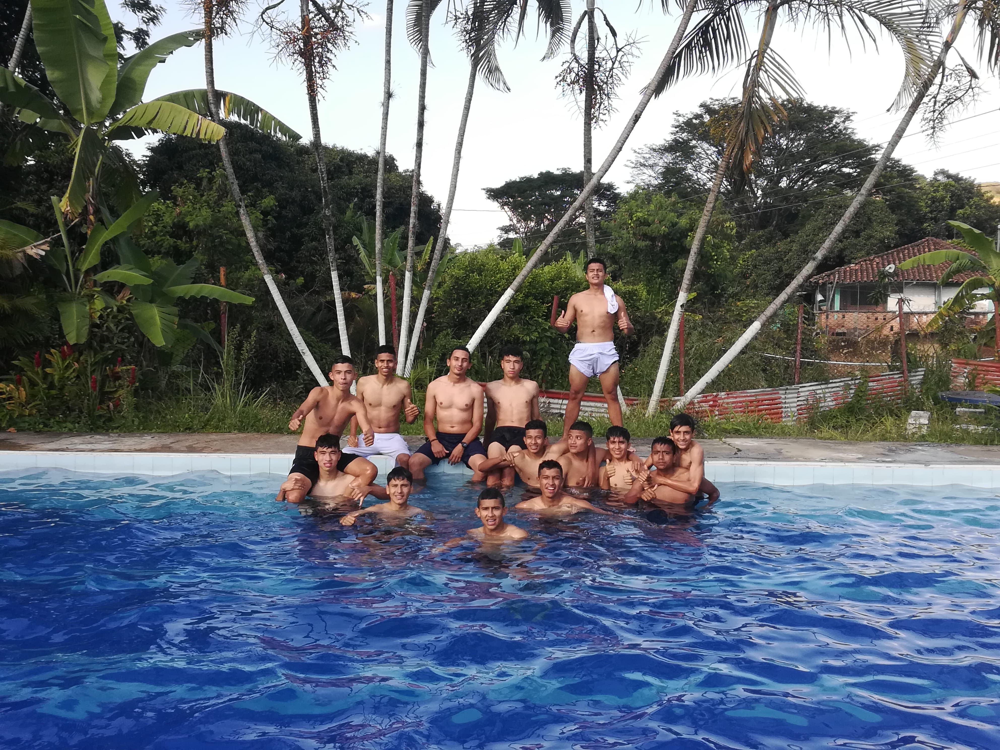

Historia del Fútbol
El fútbol es un deporte que se juega en un campo rectangular con dos porterías en los extremos. El objetivo del juego es marcar más goles que el equipo contrario. El fútbol es el deporte más popular del mundo y se juega en casi todos los países. El fútbol se juega en un campo rectangular con dos porterías en los extremos. El objetivo del juego es marcar más goles que el equipo contrario. El fútbol es el deporte más popular del mundo y se juega en casi todos los países.
El Ritmo de Mi Vida
La música me acompaña en cada momento, estos son mis artistas favoritos:
- Benito Antonia Martínez Ocasio, conocido por Bad Bunny
- UNIVERSE
- GRUPO NICHE

La tendencia hoy en dia
El álbum DTMF de Bad Bunny debí tirar más fotos debutó en la segunda posición del Billboard 200 para la semana del 18 de enero de 2025 con 122 000 unidades equivalentes, de las cuales 8 000 se registraron de ventas puras en formato físico y digital, convirtiéndose así en el séptimo álbum de Bad Bunny que ingresa directamente al Top 10. También marcó la primera ocasión desde el 2020 con YHLQMDLG que un álbum del cantante no debuta en la primera posición del listado, lo cual se atribuyó a la fecha inusual de lanzamiento en domingo en lugar de viernes, resultando en únicamente cinco días de conteo..
Admirando a Cristiano Ronaldo
CR7 es mi inspiración en el deporte y la vida.
- Nombre: Cristiano Ronaldo dos Santos Aveiro
- Fecha de nacimiento: 5 de febrero de 1985
- Lugar de nacimiento: Funchal, Portugal
- Posición: Delantero
- Equipos donde ah jugado: Sporting de Lisboa, Manchester United, Real Madrid, Juventus, Al-nassr
- Premios Individuales: 5 Balones de Oro, 4 Botas de Oro, 7 Ligas, 5 Champions League
"Correr por correr o correr por salud mental y corporal"
Trotar no solo mejora mi condición física, sino también mi claridad mental.

Videojuegos
Los videojuegos también despejan mi mente al igual de llevarlo a un desafío.
Estos son mis juegos favoritos:
- PES 2013
- The last Us
- Call Of Duty Black Ops 2


Paz y Relajación: Salidas a Piscinas
Las salidas a las piscinas son innolvidables con tus amigos, familiares. Donde despejas tu mente y relajas tu cuerpo.
Momentos Familiares
Las salidas en familia son los momentos que más debemos disfrutar, son momentos únicos que solo se disfrutan una vez en la vida.

¡Gracias por visitar mi página!
Espero que hayas disfrutado de mis hobbies favoritos.